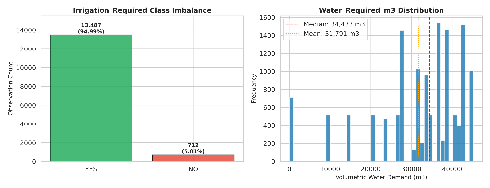
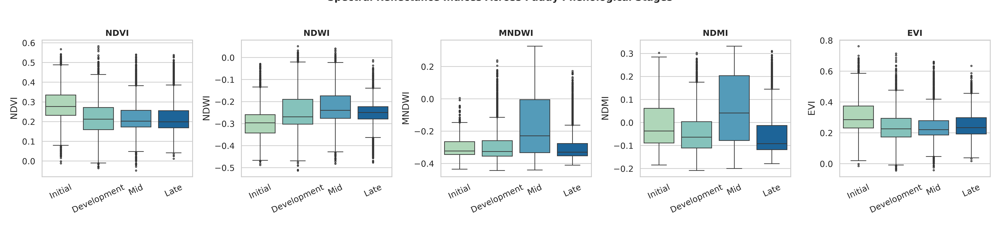
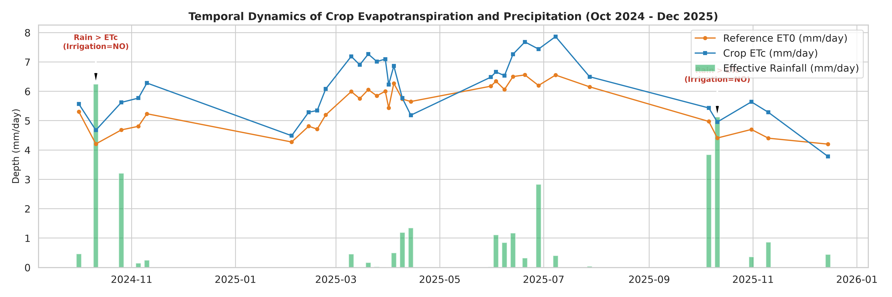
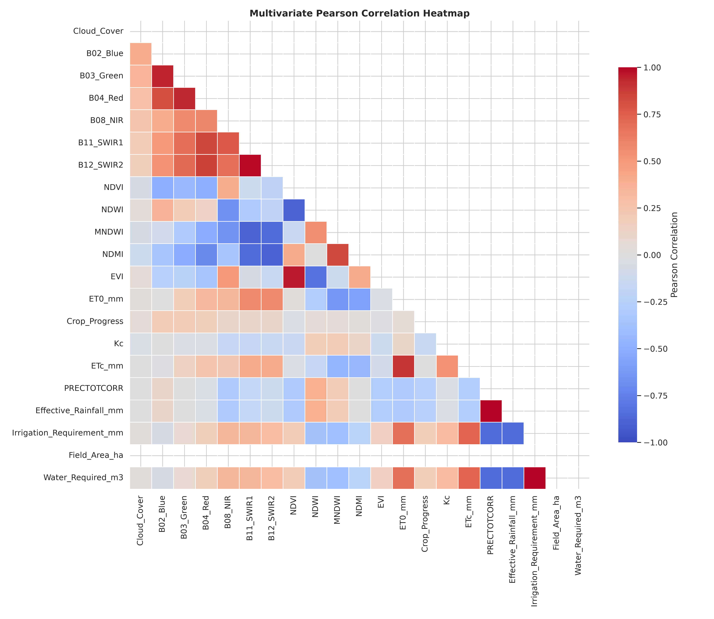

Final Year B.Tech Project | Precision Agriculture in Godavari Delta, Andhra Pradesh
Author: Deep Learning & Precision Agriculture Research Engineering Team | Date: November 2026
This report documents the rigorous exploratory data analysis of the multi-source agricultural dataset combining Sentinel-2 Level-2A surface reflectance, NASA POWER agro-meteorology, and FAO-56 hydrological water-balance calculations.
Irrigation_Required is deterministically derived from FAO-56 hydrological equations (ETc_mm = Kc * ET0_mm, Effective_Rainfall = 0.8 * PRECTOTCORR). Class distribution is heavily skewed (94.99% YES vs 5.01% NO). Crucially, the 712 "NO" observations occur on only two specific high-precipitation dates (2024-10-11 and 2025-10-11).

Spectral indices (NDVI, NDWI, MNDWI, NDMI, EVI) track the physiological maturation and water content of paddy rice across Initial, Development, Mid-Season, and Late-Season stages.


